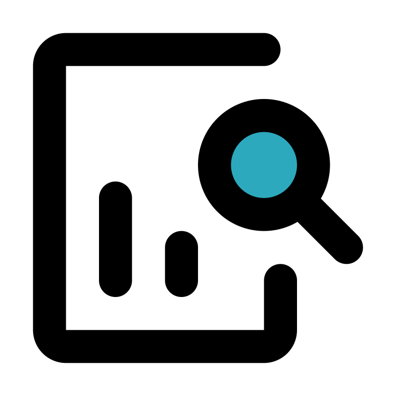

Pourquoi les Nouveaux Retardateurs de Flammes Bromés (NBFR) sont aussi importants ?
A quoi servent-ils ? D'où proviennent-ils ? Sont-ils très présents dans l'environnement ? Quels sont leurs impacts sur les êtres vivants ? Comment les quantifier ?
Explorez leurs enjeux via notre plateforme d'e-learning.
Plongez dans l'apprentissage avec nos modules interactifs, chacun dédié à un aspect crucial des Nouveaux Retardateurs de Flammes Bromés.
De leur origine aux analyses environnementales réalisées.
-

Introduction aux retardateurs de flammes bromés
Plongez dans les origines des retardateurs de flammes bromés. Explorez leurs propriétés, leurs transferts et leurs impacts sur l'environnement et sur les êtres qui le constituent.
En savoir plus -
Analyser les retardateurs de flammes bromés
Découvrez les méthodes d'analyse de ces composés. Appréhendez les outils utilisés, leur principe de fonctionnement et ce qui fait l'intérêt de notre étude.
En savoir plus -

Notre étude
Découvrez notre étude. Découvrez les tests réalisés, notre méthode d'analyse optimisée, nos résultats ainsi que les conclusions que nous avons pu en tirer.
En savoir plus
Enrichissez votre expertise en chimie analytique avec nos quiz interactifs !
Chaque module de cours est associé à des évaluations pratiques, offrant une flexibilité totale pour les aborder dans l'ordre qui vous convient. Personnalisez votre parcours d'apprentissage et testez votre compréhension de manière adaptative et engageante.